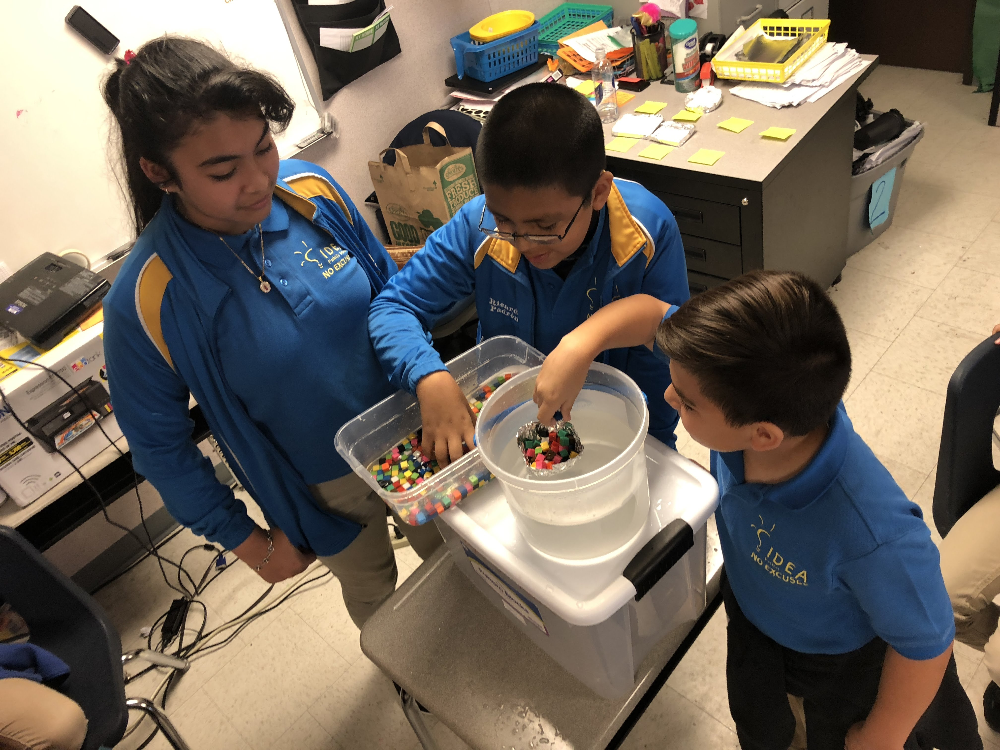

Future Comic Genius
Every day brings a variety of excitement and disappointment. The comedic
genius of my little buddy C.A. blows my mind. Most of his doodles are of scary
monsters from movies and video games, but every few pages, he'll sneak in
a few gems like these. I hope you like them as much as I do.

Any thoughts on horozontally aligning these images?

Mixed to Improper and Back Again!
These are the steps we use for visual learners:
- Draw one whole
- "Cut" it into the fraction-sized pieces
- Label each piece starting with one
- Draw another whole and "cut" it
- Keep counting up until you get to the numerator
- Lightly shade all of the numbered pieces
- The whole number is the number of wholes complete shaded
- The fraction is how much is shaded in the last fraction
Look, overflow makes the article container fit around the picture!
Rocking the Boat to Explore Volume
We had so much fun redefining what a "boat" looks like. Each group of students
had to use the same materials to build the boat that carried the largest volume
of shipping containers!

Escape from Emoji Island
There was laughter, tears, and a very clever Emoji king!
I need help orienting my images........